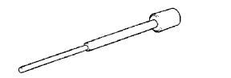
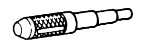
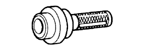
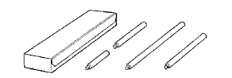
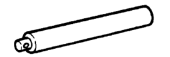
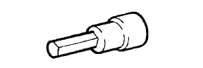

ĐỘNG CƠ > THAY THẾ > Chuẩn bị

|  | 09201-01055 | Dụng cụ tháo bạc dẫn hướng xupáp và Bạc thay thế 55 |
|  | 09222-30010 | Dụng cụ tháo bạc thanh truyền và hay thế |
| 09223-15030 | Dụng cụ thay thế phớt dầu và vòng bi | |
|  | 09223-50010 | Phớt dầu phía trước trục khuỷu Bạc tháo lắp |
|  | 09950-70010 | Bộ tay cầm |
| (09951-07100) | Tay vam 100 | |
|  | (09951-07150) | Tay vam 150 |
 | 09040-00011 | Bộ đầu lục giác | - |
|  | (09043-20100) | Đầu lục giác 10 | - |
| 09090-04020 | Thiết bị treo động cơ | - |
| Keo làm kín chính hiệu của Toyota 1324, three bond 1324 hay tương đương | - |
| Keo làm kín chính hiệu của Toyota 1344, three bond 1344 hay tương đương | - |
| Keo làm kín chính hiệu của Toyota 1282B, Three Bond 1282B hay tương đương | - |
| Keo làm kín chính hiệu của Toyota, màu đen, Three Bond 1270B hay tương đương | - |
| Keo làm kín chính hiệu của Toyota, màu đen, Three Bond 1207B hay tương đương | - |
| Bọt dính | - |
| Dụng cụ đo góc | - |
| Chổi than | - |
| Đồng hồ đo xilanh | - |
| Dụng cụ rà xupáp (30°) | - |
| Dụng cụ rà xupáp (45°) | - |
| Dụng cụ rà xupáp (60°) | - |
| Palăng xích | - |
| Đồng hồ đo áp suất nén | - |
| Bộ nắn thanh truyền | - |
| Đồng hồ đo CO/HC | - |
| Đồng hồ đo xilanh | - |
| Đồng hồ so | - |
| Đồng hồ so có đế từ | - |
| Dung dịch màu | - |
| Máy điều chỉnh động cơ | - |
| Dụng cụ làm sạch rãnh | - |
| Bộ sưởi | - |
| Panme | - |
| Máy mài lỗ chốt | - |
| Dụng cụ tháo xéc măng | - |
| Dây đo bằng nhựa | - |
| Thước thẳng | - |
| Máy ép | - |
| Dụng cụ thử nắp két nước | - |
| Mũi doa (5.5 mm) | - |
| Mũi doa | - |
| Giấy ráp (#400) | - |
| Thước trượt | - |
| Chổi mềm | - |
| Dung môi | - |
| Dụng cụ thử lò xo | - |
| Ke vuông | - |
| Thước thẳng | - |
| Đồng hồ tốc độ động cơ | - |
| Nhiệt kế | - |
| Đèn soi thời điểm đánh lửa | - |
| Cờlê cân lực | - |
| Đầu khẩu "Torx" | - |
| Bàn chải làm sạch bạc dẫn hướng xupáp | - |
| Rà đế xupáp | - |
| Thước kẹp | - |
| Khối V | - |
| Bàn chải sắt | - |
| Khối gỗ chèn | - |